The brief was to develop a brand identity for Sparc — a proposed name for Citi's in-house creative team, a full-service agency that would bring creative and production capability inside one of the world's largest banks. This is the concept deck exploring what that identity could look, feel and sound like.
The name held the creative platform. Sparc fuses the energy and optimism of a spark with Citi's iconic arc, representing the power of creative thinking in a corporate world. Every element of the visual identity was built outward from that central idea — from the heat-charged colour palette to the typographic treatment that puts the name in perpetual motion.
The naming brief required something that could work at multiple levels — creative and energetic without abandoning the authority of the master brand. Sparc is a found word within the Citi universe, where the team's energy and potential meets Citi's arc to ignite something new. The italic logotype reinforces that sense of motion and momentum from the very first letterform.
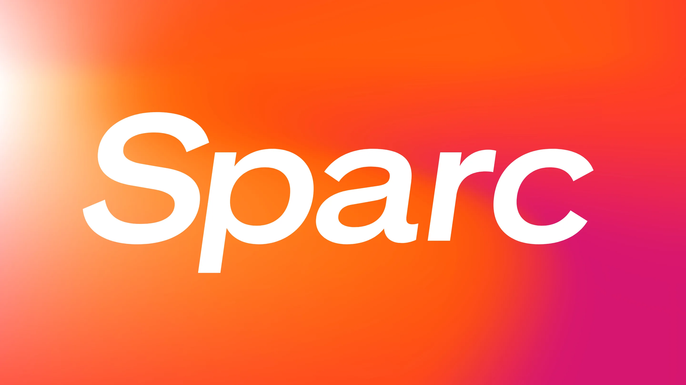
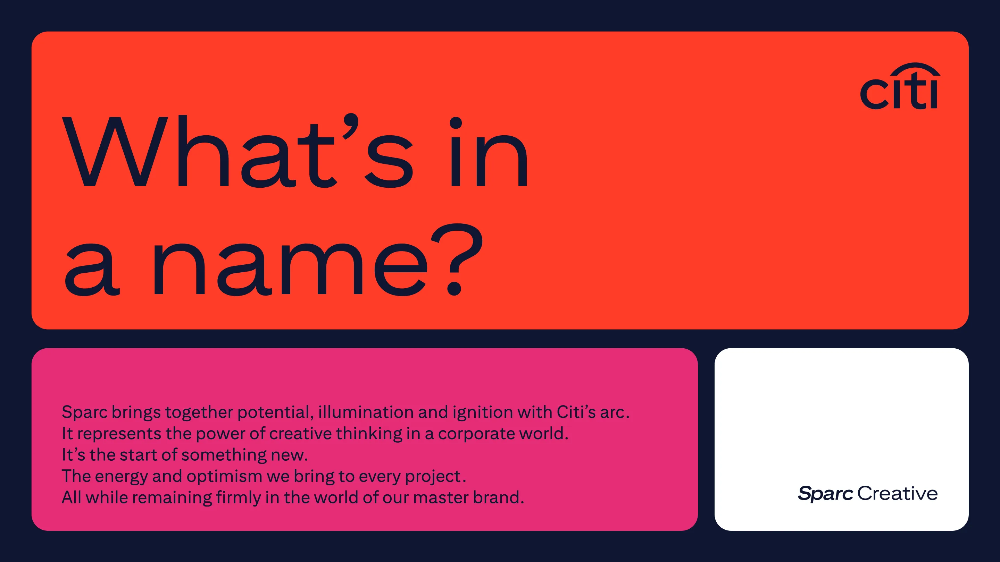
The visual system is built on three interlocking elements. A palette of hot, energetic tones — Citi Red, Orange, Magenta and Ink Blue — gives the brand heat and immediacy, drawn directly from Citi's existing colour architecture but pushed to their most vivid expression. Gradients that always radiate outward from white create the impression of combustion and release, referencing the spark metaphor at every turn. Typography uses Citi Sans Display Bold Italic throughout, the italic treatment making the Sparc name feel as though it's perpetually in motion.
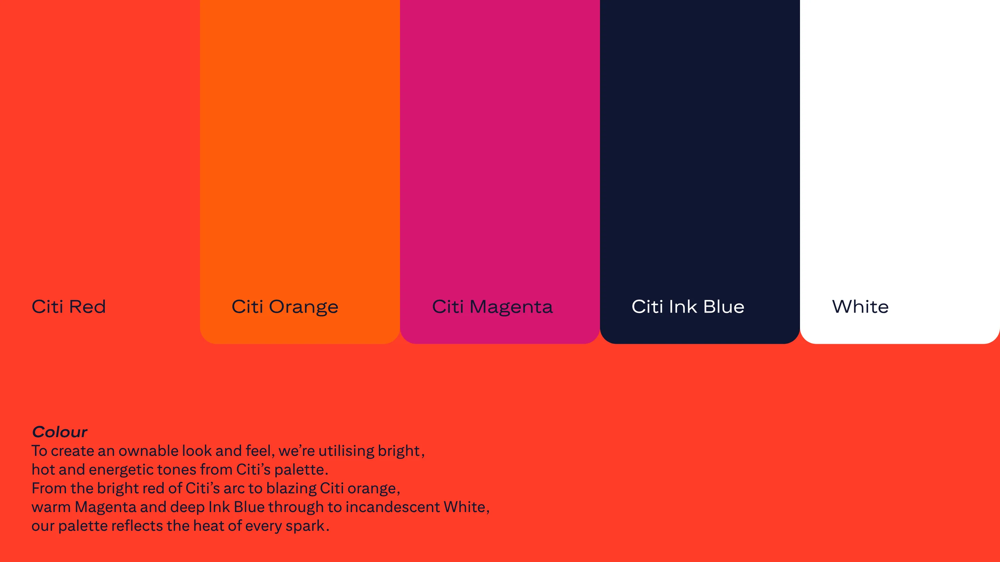
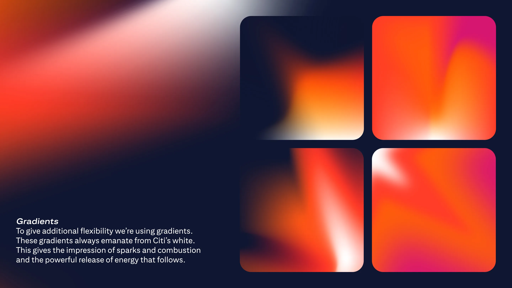
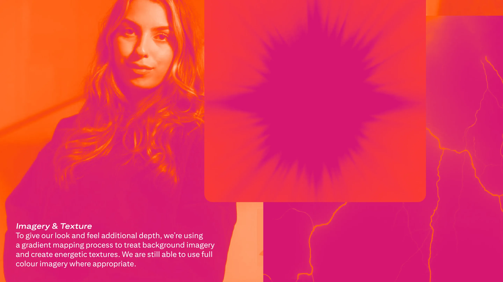
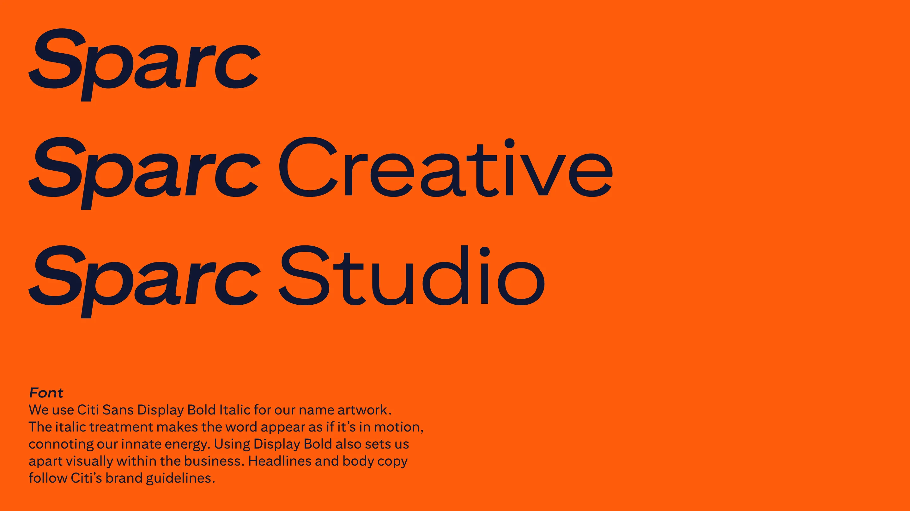
The concept deck demonstrates how the brand would flex across applications. Campaign headlines pair the rational language of finance with the creative ambition of the proposed team — reframing what an in-house agency could mean inside a global bank. Portrait-format executions bring the three proposed brand values to life: Integrated and imaginative. Expert and human. Unexpected but effective. Each application uses the gradient and colour system to dial up energy while keeping the brand firmly anchored in the Citi world.
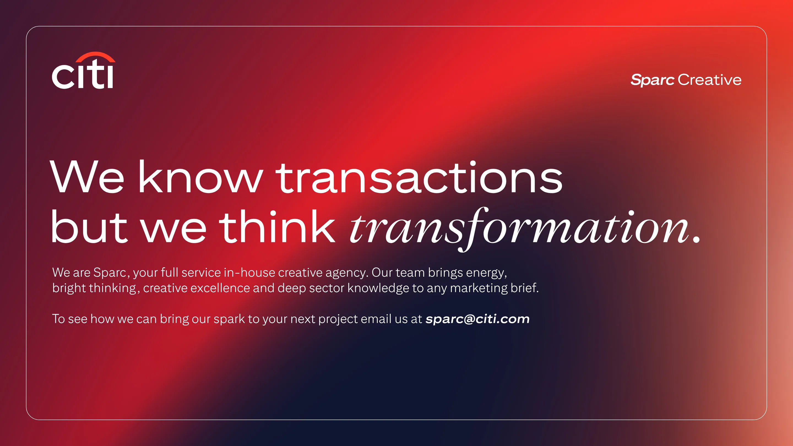
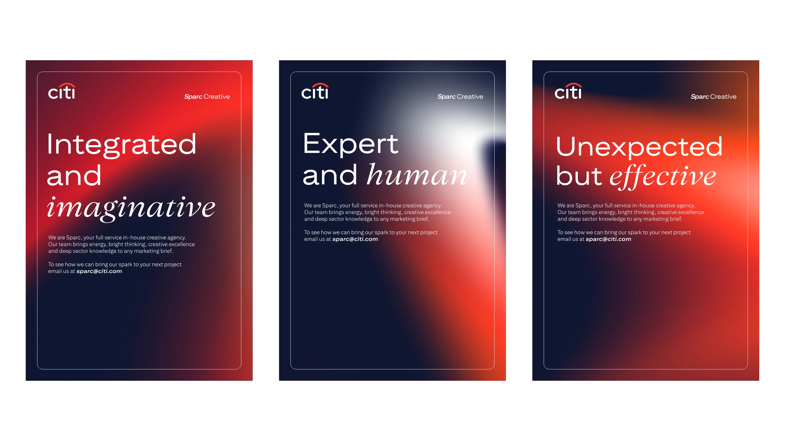
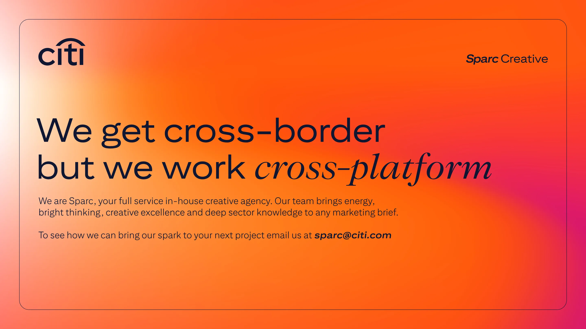
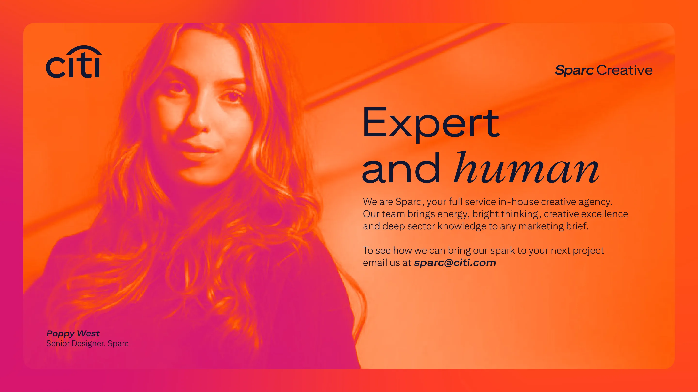
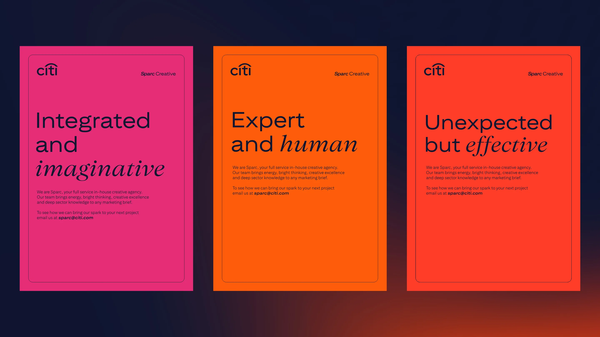